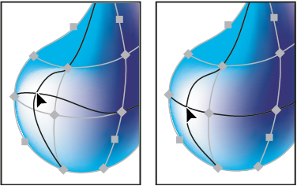
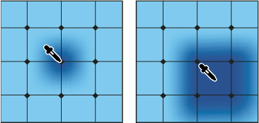

Edit mesh objects
You can edit a mesh object by adding, deleting, and moving mesh points; changing the color of mesh points and mesh patches; and converting the mesh object back to a regular object.
 Add a mesh point
Add a mesh point
 Select the Mesh tool and
select a fill color for the new mesh points. Then click anywhere
in the mesh object.
Select the Mesh tool and
select a fill color for the new mesh points. Then click anywhere
in the mesh object.Delete a mesh point
Move a mesh point
Drag it with the Mesh tool or Direct
Selection tool. Shift-drag a mesh point with the Mesh tool to keep
the mesh point on a mesh line. This is a convenient way to move
a mesh point along a curved mesh line without distorting the mesh line.

Dragging to move mesh point (left) compared to Shift- dragging
with the Mesh tool to constrain the point to the mesh line (right)
Note: When you select the mesh point with the Mesh tool
or Direct Selection tool, direction lines appear on it. You can
drag the direction lines to edit the mesh point as you would any
anchor point. Shift-drag a direction point with the Mesh tool to
move all direction lines for the mesh point at once.
Change the color of a mesh point or patch
Do one of the following: -
Select the mesh object, and the drag a color from the Color panel or Swatches panel onto the point or patch.
-
Deselect all objects and select a fill color. Then select the mesh object and use the Eyedropper tool to apply the fill color to mesh points or patches.

Adding color to a mesh point (left) compared to adding color
to a mesh patch (right)